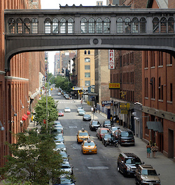

Chelsea
#quaintshops #historic #market #coffee #daydrinking #boat #beer #golf #bytheriver #elevatedpark #historic
Neighborhood Lowdown
Commonly known as one of the best situated neighborhoods (similar to Flatiron), Chelsea is walking distance to a lot of cool places, but I wouldn't say that there is anything in particular that would characterize the vibe of this neighborhood, as it draws mainly on its adjacent fellows (Union Square, West Village, etc.).
Public Transit Service: A, C, E, L
Cup of Joe

Blue Bottle Coffee - Chelsea Market
Super popularized coffee place - doesn't seem to be much of a wait at this place, but people in SF wait up to 45 min in line for one of these!
Let's get started
Eat
Chelsea Market
#quaintshops #historic #market #coffee
Indoor market with lots of cool little shops, including a bookstore. Nothing that will blow your mind, but a quaint, nice place to take a stroll when you feel like looking at some neat stuff.
Drink
Frying Pan
#daydrinking #boat #beer
An old cargo ship that is attached to the land and has been converted into a bar. That sounds lame, but is actually a beautiful way to spend a sunny day - out on the water with a couple of drinks, good company, and some snacks! It's one of my favorite places in the summertime, as well as the rest of New York's (watch out for long lines on hot days).
Play
Chelsea Piers
#golf #bytheriver
If you ever want some peace and quiet, Chelsea Piers is a cool/weird set up of how people in New York still manage to find space to play a sport that actually requires more space than Manhattan has to offer.
Highline Park
#elevatedpark #historic
LThis used to be the railway that connected the meatpacking to the pier. Instead of razing it, they built a park around the old railing (and I guess raised it?) so that you can walk down a good portion of the Hudson in a one-of-a-kind park. If you get hungry or are craving a drink, there is a cute cafe located right in the middle of the park.
Recommended Trip

Start at the market and walk along the highline.

Find yourself at the Frying Pan around mid-afternoon.
End the day with a couple of relaxing strokes at Chelsea Piers.
- liang.val63@gmail.com |
- 02.22.2015 |
- valpal23.blogspot.com |
- Home
This website is not intended for public viewing and all photos used are only temporary placeholders.